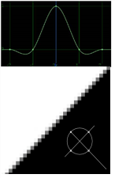

Spatial transformations involve remapping pixels from their original positions to new positions. The question arises as to what values to assign remapped pixels. In the simplest case, they retain their original values, but this can create problems with image quality, particularly in high contrast areas of the frame. For example, the figure below shows a close up of a high-contrast feature that has been rotated clockwise by 45 degrees. The remapped pixels have retained their original values, but the result is a highly aliased, or jagged, edge:
The solution is to apply a more sophisticated filtering algorithm to determine the values of remapped pixels - one that takes into account, in some fashion, the values of neighboring pixels.
For example, applying Nuke’s cubic algorithm to the above rotation, results in a softer, less jagged edge:
When executing spatial transformations, Nuke lets you select from the filtering algorithms described in the table below.
Note that the curves shown in the table plot the manner by which each algorithm samples from neighboring pixels. The center of each curve represents the value of the remapped pixel itself, and the rising and falling portions of each curve represent the amount of sampling that occurs across a five pixel radius.
TIP: When using filters that employ sharpening, such as Rifman and Lanczos, you may see a haloing effect. Some nodes, such as Transform and Tracker, include a clamp control to correct this problem.
|
Filter |
Description |
Sampling Curve and Output |
|
Impulse |
Remapped pixels carry original values. |
|
|
Cubic (default) |
Remapped pixels receive some smoothing. |
|
|
Keys |
Remapped pixels receive some smoothing, plus minor sharpening (as shown by the negative -y portions of the curve). |
|
|
Simon |
Remapped pixels receive some smoothing, plus medium sharpening (as shown by the negative -y portions of the curve). |
 |
|
Rifman |
Remapped pixels receive some smoothing, plus significant sharpening (as shown by the negative -y portions of the curve). |
|
|
Mitchell |
Remapped pixels receive some smoothing, plus blurring to hide pixelation. |
|
|
Parzen |
Remapped pixels receive the greatest smoothing of all filters. |
|
|
Notch |
Remapped pixels receive flat smoothing (which tends to hide moiré patterns). |
|
|
Lanczos4 |
Remapped pixels receive minor sharpening (as shown by the negative -y portions of the curve), good for scaling down. The filter number at the end of the filter name denotes the width of the filter (4 pixels). |
|
|
Lanczos6 |
Remapped pixels receive some sharpening (as shown by the negative -y portions of the curve), good for scaling down. The filter number at the end of the filter name denotes the width of the filter (6 pixels). |
|
|
Sinc4 |
Remapped pixels receive a lot of sharpening (as shown by the negative -y portions of the curve), good for scaling down. The filter number at the end of the filter name denotes the width of the filter (4 pixels). |
|
NOTE: Lanczos and Sinc filters exhibit haloing as the filter becomes sharper.
NOTE: The numbers appended to the filter name denote the width of the filter, similar to the naming scheme used by PRMan. See http://www.renderman.org/RMR/st/PRMan_Filtering/Filtering_In_PRMan.html for more information.
|
|